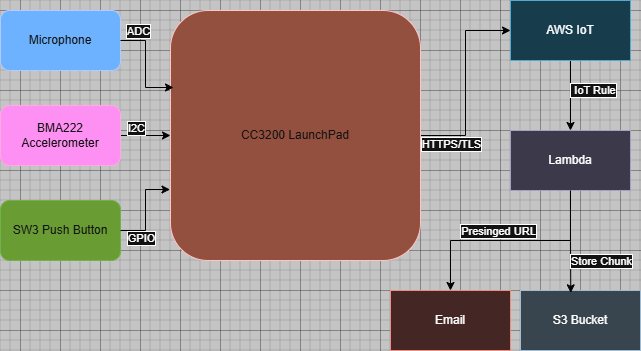
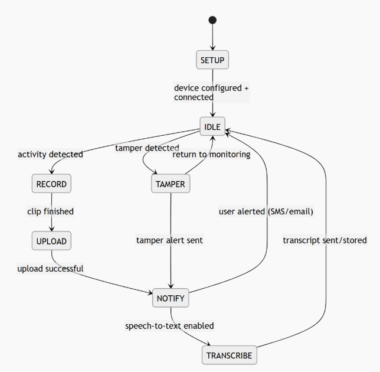

The final project consisted of designing and implementing a smart remote listening device using the TI CC3200 platform. The purpose of the project was to create a system capable of monitoring its surroundings, detecting relevant events, recording audio, and sending alerts or data to a remote user. TI CC3200 LaunchPad is used as the main hardware platform for developing an embedded monitoring system. The system was designed around the idea of detecting nearby activity through sound and detecting unwanted movement through the onboard accelerometer. When activity was detected, the device would record audio samples and transmit them over Wi-Fi using AWS IoT services. Audio was sampled by the microcontroller, converted into a compact 8 bit format, encoded into base64, divided into chunks, and transmitted through the AWS IoT device shadow. A cloud side process was then intended to reassemble the audio data into a WAV file and provide access to the user through email. The plan was to also implement a high level state based workflow in which the device would remain idle while monitoring, transition into recording or tamper states when triggered, and then notify the user before returning to monitoring. The final code met all these goals with the exception of text to speech by implementing a complete embedded state machine with disarmed, idle, recording, audio sending, tamper sending, and error states.
The first goal of the project was to implement a minimal working monitoring device that could detect sound through a microphone and capture raw audio data using the ADC. This required configuring the ADC on the CC3200, collecting samples, and storing them in a memory buffer. The second goal was to extend the basic monitoring behavior by adding event driven system responses, specifically activity triggered recording and tamper detection using the accelerometer. Another major goal was to send the resulting information to a remote user through cloud services. In the final implementation, the system successfully incorporated sound threshold detection, accelerometer based tamper detection, state based device arming and disarming through a pushbutton, and chunked base64 audio transmission through the AWS IoT shadow.
The primary challenge we faced when implementing our design was the data limit of the device shadow. There was a hard set 8kB limit per post. At a reasonable sample rate that resulted in only 1 second of distinguishable audio being sent to the user. We explored a few different solutions including direct S3 bucket capture but ultimately ended up using device memory to store larger recordings and then post them in multiple chunks. The quality of the microphone was also a minor hiccup which made the sent audio higher pitched but still distinguishable.
All software development and testing were performed using Code Composer Studio and the TI CC3200 support libraries. The implementation used the SimpleLink networking stack, TI driver libraries, UART terminal output, ADC functions, GPIO access, timer delays, and I2C communication with the built in BMA222 accelerometer. The device behavior was organized using a state machine with the states disarmed, idle, recording, sending audio, sending tamper, and error. The system first initialized the board, pin multiplexing, terminal, ADC, and accelerometer. It then connected to Wi-Fi, set the device time, and sent a startup notification over TLS to AWS IoT. The device began in a disarmed state and waited for the user to press SW3 to arm it. Once armed, the program calibrated both the microphone baseline and the accelerometer baseline so that future changes could be compared against normal conditions. During monitoring, the system periodically checked for either a button press to disarm, a tamper event from the accelerometer, or a noise event from the microphone input. The microphone was sampled through ADC channel 1. A baseline value was first measured using a number of initial samples, and future audio input was compared against this average to determine whether meaningful sound was present. By chunking the raw data bytes from the CC3200 to AWS, a Lambda function acts as the cloud-side brain of the system. Lambda uses S3 buckets to extract stored chunks and once all 8 arrive, stitches them into the original 40,000 byte audio sequence, appends a 44-byte WAV header, and generates a presigned URL emailed to the user.
Overview of how the hardware and cloud components connect.

How the device transitions between operating states.

| # | Item | Quantity | Cost | Source |
|---|---|---|---|---|
| 1 | TI CC3200 LaunchPad | 1 | $66.00 | ti.com |
| 2 | Microphone | 1 | $7.95 | — |
| Total | $73.95 | |||